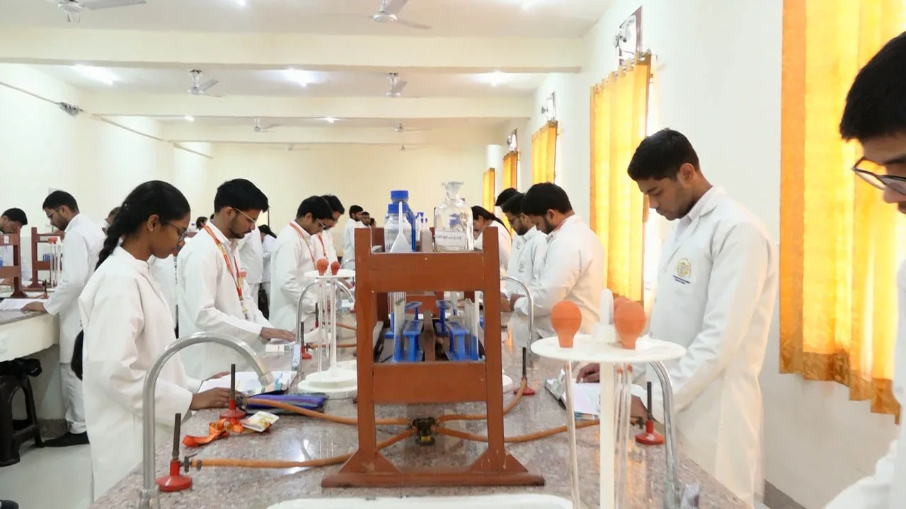
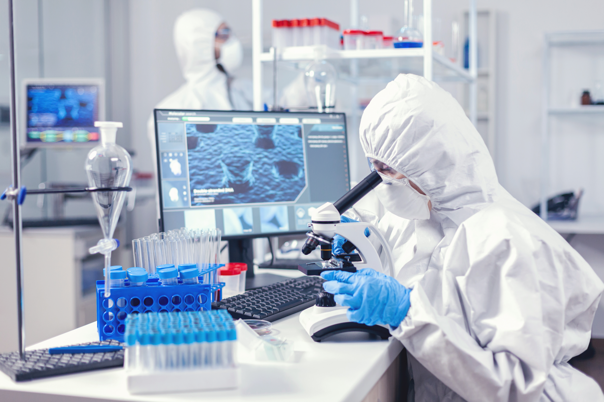

Choose Your MSc Medical Specialization

MSc Medical Microbiology
A three-year postgraduate program covering the study of microorganisms and their role in human health and disease. Students gain practical training in the university's dedicated Microbiology labs across all three academic phases.
Core Syllabus (Phase-II & III)
- General Bacteriology
- Systematic Bacteriology
- Medical Virology
- Mycology
- Parasitology
- Immunology & Serology
- Hospital Infection Control & Applied Microbiology
Career Scope
- Medical Microbiologist
- Infection Control Officer
- Quality Analyst
- Clinical Research Analyst

MSc Medical Biochemistry
A three-year postgraduate program focused on the chemical processes within living organisms, from clinical biochemistry to molecular biology. Students train in the university's dedicated Biochemistry lab across all three academic phases.
Core Syllabus (Phase-II & III)
- Clinical Biochemistry
- Intermediary Metabolism
- Enzymology & Endocrinology
- Molecular Biology & Genetics
- Advanced Diagnostic Techniques & Immunology
Career Scope
- Clinical Biochemist
- Laboratory Director / Manager
- Assistant Professor
- Quality Control Specialist

MSc Medical Anatomy
A three-year postgraduate program covering the structure of the human body in depth, from gross anatomy to medical genetics. Students train in the university's Anatomy lab and dissection facilities across all three academic phases.
Core Syllabus (Phase-II & III)
- Human Gross Anatomy
- Embryology & Developmental Biology
- Histology & Microscopic Anatomy
- Neuroanatomy
- Medical Genetics
- Surface & Radiological Anatomy
Career Scope
- Assistant Professor / Lecturer in Medical & Dental Colleges
- Medical Writer
- Anatomist
- Clinical Geneticist
- Research Scientist
MSc Medical Physiology
A three-year postgraduate program covering the functions and mechanisms of the human body, from neurophysiology to sports and environmental physiology. Students train in the university's dedicated Physiology lab across all three academic phases.
Core Syllabus (Phase-II & III)
- General & Systemic Physiology
- Neurophysiology & Special Senses
- Cardiovascular & Respiratory Physiology
- Renal & Endocrine Physiology
- Exercise & Environmental Physiology
Career Scope
- Assistant Professor / Lecturer
- Clinical Physiologist
- Research Scientist
- Sports Physiology Consultant